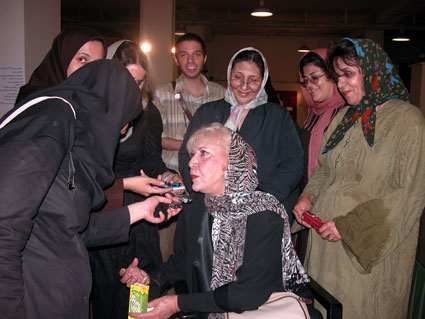

|
|
|
Browsing
Contact Us |
Campaigners |
Face to Face |
Tribune |
Interview |
News |
On the Web |
One Million |
Report
Farsi | Français | German | Italian | Spanish | العربية Also in this section
|
 Simin Behbahani: Your Efforts Will Never Stay Unnoticed Painting Exhibit Held in Honor of the Campaign’s AnniversaryMonday 8 October 2007 On Sunday September 9th, an exhibition of painting titled “All of My Mothers,” was displayed with the works of 33 artists at the Bahman Cultural Center, correlating with the one year anniversary of the One Million Signature Campaign. This exhibition was on display for ten days, the first three days entailed training sessions for painters attending the exhibit, for the painting sessions the following themes were been selected: 1) Give children’s custody to mothers On the opening day of the exhibition, Simin Behbahani, one of the symbolic leaders of the women’s movement in Iran, made an appearance at the exhibition for a show of solidarity with the Campaign. Simin Behbahani, while surrounded by fans, responded to questions from reporters. On the relationship between women’s art and literature and societal problems, she stated: “art is a tool for spiritual resurgence, a tool for transmitting messages to society and a force for unification. It brings joy. An artistic woman is never left alone, for with her skills she can greatly influence family members and environments.” She looked toward female artists whose work was on display and stated: “you must provide hope for society, give your message to society, all of this is your responsibility, and your biggest responsibility is contributing pure art because this can best impress society.” In response to the question regarding how art diminishes and eliminates inequality, she stated: “art originated with civilization. When the human sensed that it was alive and it wanted to live, this is when art began. This means that the artist, from that time, has struggled through his or her art to build relations with others.” In response to the question do you believe that art can be influential in the efforts of the Million Signature Campaign? She stated: “by displaying this painting you can grasp people’s attention, and to show them what it is you want. Why you work so hard, and why you struggle for a better life. At that time, they will definitely sympathize with you, and sign the Campaign’s petition.” Simin Behbahani stated the following about the exhibition: “when I entered the exhibit, I thought that I had entered one of the levels of heaven because when so many young women and young girls, with complete love and interest, under such difficult conditions, were able to present such an exhibition, in reality they have made their own one of the greatest accomplishments. Your efforts will never stay unnoticed. When I first entered, the first word I said was congratulations, which means, I congratulated your accomplishment.” This exhibition has been made possible due to the efforts of all artists who illuminate societal issues through their work. Rozita Sharaf Jahani stated the following regarding the reasons for this exhibition: “It had been a long time, a one year period, that we had been thinking about societal issues, everyone worked separately on societal issues, and we decided to connect everyone and put together this exhibition. First we thought about women’s issues, in particular mothers and their rights. The problem that most mothers face is child custody, it is a sensitive topic and all the artists have worked on this topic. For this reason we selected the topic of mothers, so while simultaneously marking the one year anniversary of the Million Signatures Campaign, we can have a discussion on women’s rights.” Mansoureh Shojaee, another participant in this exhibition stated: “When we examined discriminatory laws toward women, the discriminatory nature of custody laws remain despite modification, and it is a sensitive issue for women, mothers and even children. Therefore we felt that this issue, is closer to the issue of women and mothers. All of us women work toward implementing women’s rights, and addressing women’s societal issues, but it seems because our efforts occur in a disconnected manner, a resolution such as coordinated collaborative work brings us all together.” This report was translated by Shirin Saeidi |